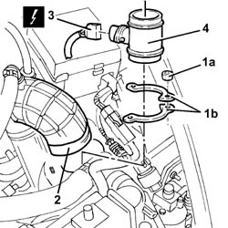

1060G10 AIR FLOW METER - R.R.
- Path
- Procedures > 10 ENGINE > 1060 DIESEL FUEL INJECTION SYSTEM > 1060G DIESEL INJECTION PRESSURE PUMP ELECTRONIC CONTROL > 1060G10 AIR FLOW METER - R.R.
- Kind
- repair procedure (removal / refitting; the operation number is the code)
- Applies to
- engines: 2.4 JTD 10V; all production periods
- Interactive page
- https://sloeber94.github.io/elrnDB-lThss/en/#/100704
Applies to: all engines; all production periods
 Removing
Removing
 Refitting
RefittingSee in Op. 1016A10
See in Op. 1048A21
1. Undo the nuts (1a) fixing the air flow meter mounting brackets (1b).
2. Disconnect the turbocharger air supply hose from the air flow meter.
3. Disconnect the electrical connection for the air flow meter.
4. Remove the air flow meter.

Applies to: all engines; all production periods
Refitting
Removing- Thoroughly clean the air flow meter and the areas connected with the air filter casing in order to prevent any dirty air from passing through.
- Fit the flow meter and connect the electrical connection to it.
- Position the brackets and secure them using the nuts.
- Connect the turbocharger air supply hose to the air flow meter.
See in Op. 1048A21
See in Op. 1016A10